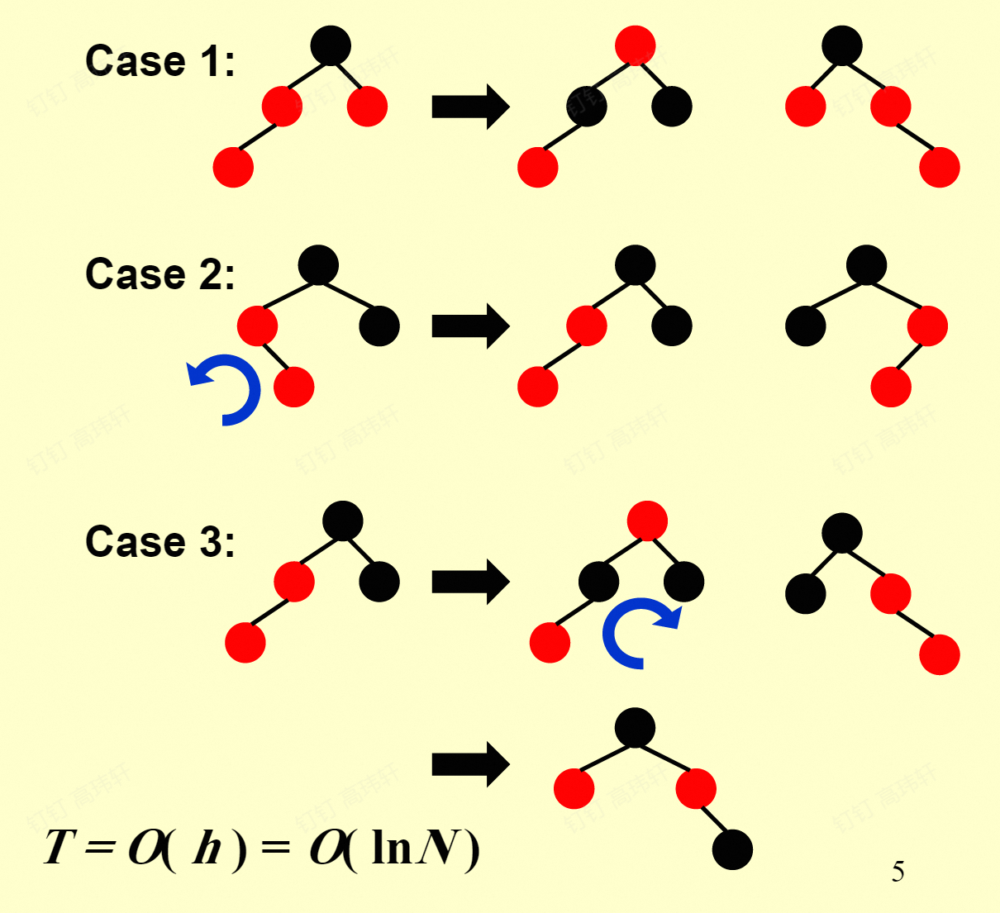
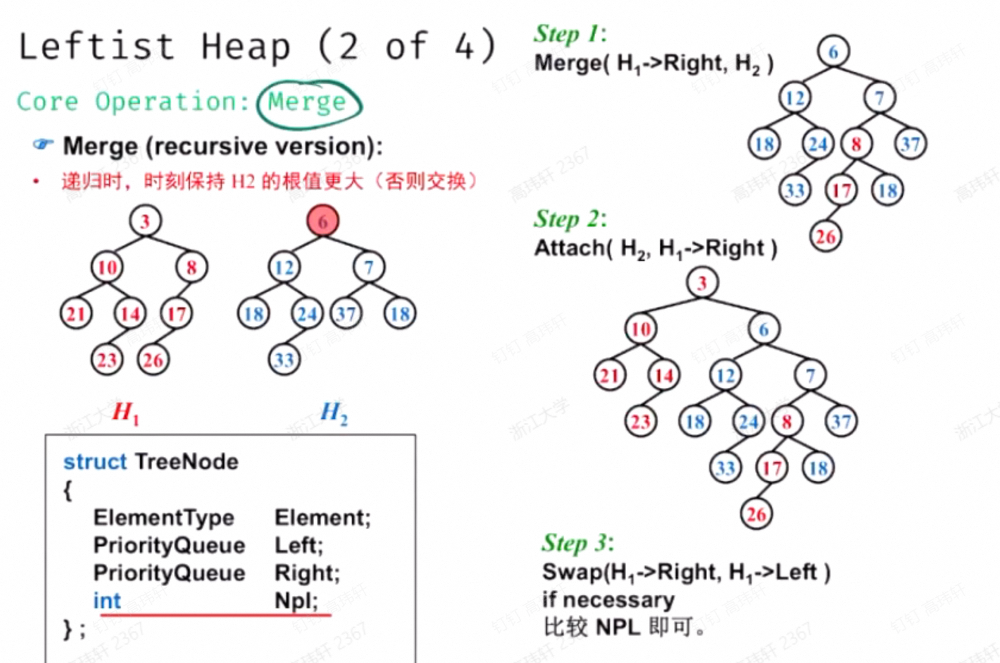
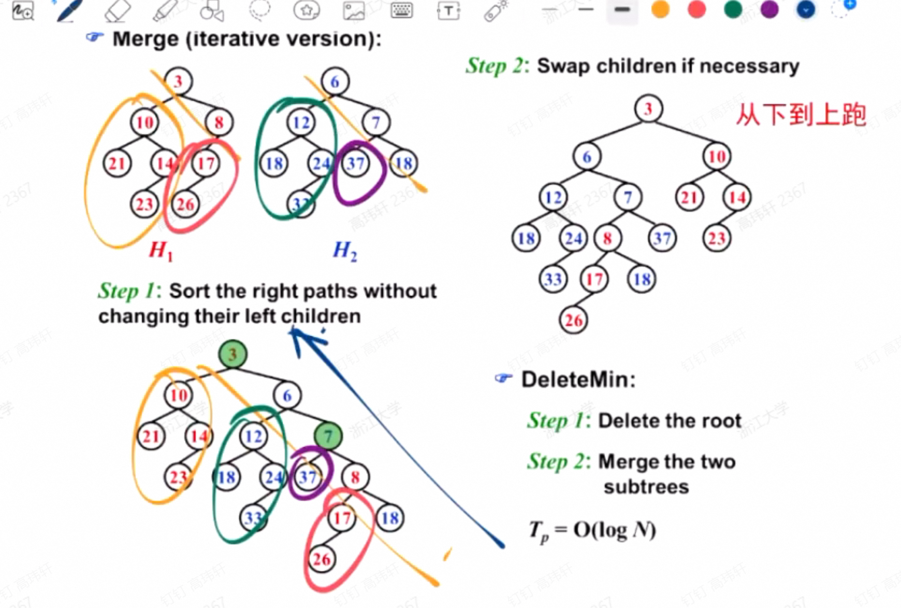
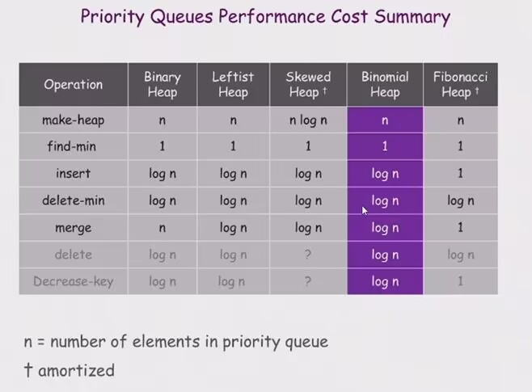
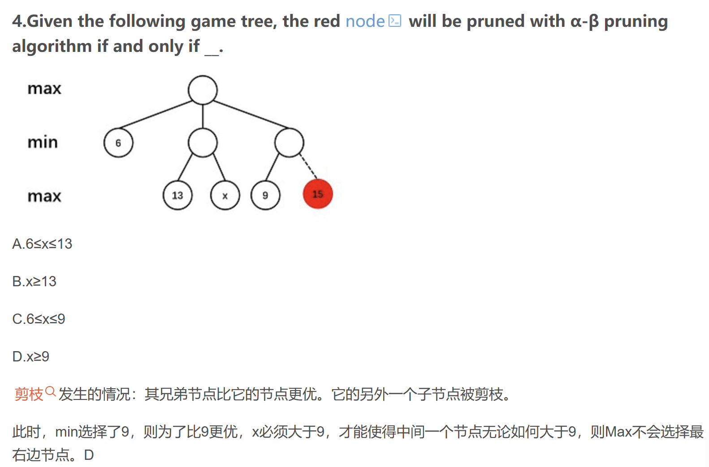
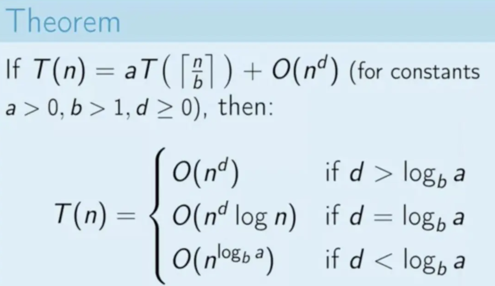
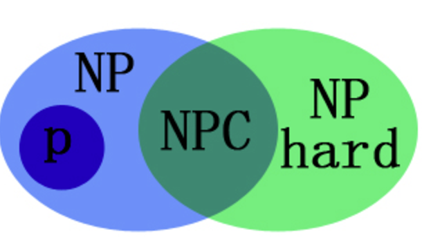

高级数据结构与算法分析¶
约 5311 个字 50 行代码 7 张图片 预计阅读时间 16 分钟
任课教师：杨洋
Reference
OI wiki: https://oi-wiki.org/ds/
https://note.shad0wash.cc/cs/ads/
抄了好多ADS面向40分斩杀线复习 by Klee1453
后半学期摆了……
AVL树¶
是二叉搜索树的一种：
- 平衡因子（BF: Balance Factor）：某节点左子树的高度减去右子树的高度
- AVL树：任意节点的平衡因子只能是-1、0、1
- 不满足条件时，通过旋转操作进行调整，形成AVL树
- 旋转：将某个节点“提起来”，另一侧节点与其的父子关系便颠倒，同时节点本身的某个子节点也易父
- RR, LL, RL, LR
- LL,RR一般是对失衡节点的子节点转上去
- RL,LR一般是对失衡节点的孙子节点转上去（转两次）
- 具体可见这里的图像展示
例题
Insert 2, 1, 4, 5, 9, 3, 6, 7 into an initially empty AVL tree. Which one of the following statements is FALSE?
A. 4 is the root
B. 3 and 7 are siblings
C. 2 and 6 are siblings
D. 9 is the parent of 7
Answer
插入建树就行，记得每次插入后如果有失衡就立刻旋转，选B。
Node RightRotate(Node UnbalancedNode){
Node Child = UnbalancedNode->LeftChild;
Node GrandChild = Child->RightChild;
Child->RightChild = UnbalancedNode;
UnbalancedNode->LeftChild = GrandChild;
Update(UnbalancedNode);
Update(Child);
return Child;
}
Node LeftRotate(Node UnbalancedNode){
Node Child = UnbalancedNode->RightChild;
Node GrandChild = Child->LeftChild;
Child->LeftChild = UnbalancedNode;
UnbalancedNode->RightChild = GrandChild;
Update(UnbalancedNode);
Update(Child);
return Child;
}
AVL 树的搜索、插入和删除操作的时间复杂度为 \(O(logn)\)。
Splay树¶
是二叉搜索树的一种：
- 每访问一个节点，将其旋转到根节点，会使树的高度降低。
- 一般从根节点开始旋转，直到目标节点成为根节点。
- zig: 访问节点的父节点是根节点时，只需一次旋转（把访问节点转上去）
- zig-zig: 访问节点的父节点不是根，且访问节点、父节点、祖父节点在同一侧时，需要两次旋转（沿祖父节点-父节点旋转，再沿父节点-访问节点旋转）
- zig-zag: 访问节点的父节点不是根，且访问节点、父节点、祖父节点不在同一条链上时，需要两次旋转（沿父节点-访问节点旋转，再沿祖父节点-访问节点旋转）（这是因为第一次旋转后访问节点便与原祖父节点有了一条关系边）
摊还分析¶
对一个空的数据结构连续进行\(m\)次操作，Worst_cost为\(\max_{1\leq i\leq m} c_i\)，Average_cost为\(\frac{\sum_{i=1}^m c_i}{m}\)，前者太大，后者难以计算。
引入Amortized_cost \(\hat{c_i} = c_i + \Delta_i\)，\(\Delta_i\)可正可负。且有\(\sum_{i=1}^m \hat{c_i} \geq \sum_{i=1}^m c_i\)，即\(\hat{c_i}\)是对\(c_i\)的一种“平摊”。
worst-case time \(\geq\) amortized time \(\geq\) average time
以对某Stack的操作为例：有pop、push、multi_pop的操作，其中multi_pop连续pop栈上min(k, size)个元素。
pop和push一次cost为1，multi_pop一次cost为k。
聚合法¶
进行连续n次操作（如上述三种操作），最坏的操作序列的总cost为Tn，则摊还时间为Tn/n。
此处有陷阱：可能会以为，（对multi_pop而言）最坏的操作就是连着进行n次multi_pop，每次pop出n个元素，于是得到\(O(n^2)\)的错误答案，但实际上这种情况根本不会发生，栈里不可能一直有n个元素。
因此最坏情况实则是n-1次push和一次multi_pop，cost为2n-2，摊还时间为\(\frac{2n-2}{n}=\frac{O(n)}{n}=O(1)\)。
核算法¶
势能法¶
令\(\hat{c_i} - c_i = Credit_i = \Phi(D_i) - \Phi(D_{i-1})\)
其中\(\Phi(D_i)\)为第i次操作后该结构的“势能”（是该结构的某个特性的函数，如一棵树的节点个数或高度，一个栈的元素个数等），规定\(\Phi(D_0)=0\)。
红黑树¶
超标小工具：https://www.cs.usfca.edu/~galles/visualization/RedBlack.html
哨兵化：所有无子节点的子节点都变为无键值的NIL节点，将NIL节点视为叶子，这在性质5里很有用。
拥有一个颜色Attribute的Balanced Binary Search Tree，满足以下五个条件：
- 每个节点是红色或黑色
- 根节点是黑色
- 每个叶子和NIL节点是黑色
- 每个红色节点的两个子节点都是黑色
- 从任一节点到其子树中每个叶节点（或NIL）的所有路径都包含相同数目的黑色节点
定义黑高度：从某节点到叶子/NIL节点的黑色节点数目是该节点的黑高(Black Height)。BH(Tree) = BH(root)。
定义内/外部节点：NIL节点是外部节点，非NIL节点是内部节点。
- Lemma：一棵有n个内部节点的红黑树的高度至多为\(2\ln(n+1)\)
插入¶
只能插入红色节点

插入节点为根节点，直接涂黑
父节点为黑，不破坏性质，直接插入
父节点和叔叔节点都是红色，将父节点和叔叔节点涂黑，祖父节点涂红，这时可能祖父节点和其父节点都是红色，向上继续递归调整。
父节点为红色，叔叔节点为黑色（或NIL），并且新节点处于离叔叔节点更近的侄子位，此时先将父节点（父节点为左孩子）左旋/（父节点为右孩子）右旋下去，原父节点变为叔叔节点的远侄子，转为Case 3。
父节点为红色，叔叔节点为黑色（或NIL），新节点处于离叔叔节点更远的侄子位，此时将祖父节点涂红，父节点涂黑，然后将祖父节点左旋/右旋下去，完成插入。
删除¶
- 删除叶子节点：
if(child->color==black) child->parent->onechild = NIL else = NULL - 删除度为1的节点：用其唯一子节点替代
-
删除度为2的节点：类似BST的删除，用左子树的最大节点或右子树的最小节点替代，具体如下：
找到其后继节点，将其值复制到当前节点，删除后继节点
TBD 不补了
B+树¶
B阶B+树满足以下性质：
- 叶子节点在同一层
- 叶子节点存储的元素称为Data Element
- \(\lceil \frac{B}{2} \rceil \leq \text{Degree of In-Node} \leq B\)
- \(2 \leq \text{Degree of Root} \leq B\)
- \(\lceil \frac{B}{2} \rceil \leq \text{每片叶中元素个数} \leq B\)
- 若根为叶，则\(1 \leq \text{根元素数目} \leq B\)
- In-Node 存储的第\(i\)个值\(e_i\)是该Node的第\(i+1\)个子树的叶子中的最小值
B+树的深度为\(O(\lceil \log_{\lceil \frac{B}{2} \rceil} n \rceil)\)，其中\(n\)为元素个数。
操作¶
\(n\)个元素的B+树高度为\(h\)，则：
- 分裂（核心操作）：B+ 树的核心在于其分裂操作。可以把M 的限制看做对连出去的边数的限制，叶子节点相当于是连出去至多 M 条节点—数据的边，这样可以把非叶节点和叶子节点的情况统一看待。当某个节点已经连出去 M 条边，需要塞第M+1 条边的时候，需要分裂。分裂会产生一个和原节点同级的节点，就在原节点的右侧。原节点的前⌈(M+1)/2⌉ 个孩子还属于自己，剩下的 ⌊(M+1)/2⌋ 个孩子需要交给新创建的节点。如果分裂的过程中，导致父节点也超出了M 的限制，就需要对父节点也进行分裂，以此类推。如果父节点已经是根节点，就创建一个新根再进行分裂，此时树高会增加 1，其他情况下树高不会改变。（Credit: https://mem.ac）
- 搜索：\(O(\log n)\)
- 插入/删除：\(O(\frac{B}{\log B} \log n)\)
具体操作见：https://note.isshikih.top/cour_note/D2CX_AdvancedDataStructure/Lec02
倒排索引¶
Recall 邻接表，倒排索引当中包含了所有文档中的关键字，并且以链表的形式进行存储，每个关键字对应一个链表，链表中存储了包含这个关键字的文档的编号，出现的位置以及次数。
查询关键字可用 hash table 或 Search Tree，search tree 查询速度较慢，但进行范围查询较为容易；hash table 查询速度较快，但是进行范围查询相对困难。
搜索的性能衡量指标有两个：召回率和准确率。召回率是指检索到的相关文档数与系统中所有相关文档数的比值，准确率是指检索到的相关文档数与检索到的文档总数的比值。
| TableOf | Relevant | Irrelevant |
|---|---|---|
| Retrieved | \(R_R\) | \(I_R\) |
| Not Retrieved | \(R_N\) | \(I_N\) |
- 召回率：\(Recall = \frac{R_R}{R_R+R_N}\)
- 准确率：\(Precision = \frac{R_R}{R_R+I_R}\)
作业题
Precision is more important than recall when evaluating the explosive detection in airport security.()
准确度在航班安检时爆炸物的探测中比召回率更重要。（）
Answer
False. 召回率更重要，因为不能漏掉任何一个爆炸物。
“召回率就是，宁可错杀一千绝不放过一个。” -- yy老师
左式堆与斜堆¶
左式堆¶
回忆普通二叉堆的性质：
wyy有话说
- Insert：我们直接插在完全二叉树的下一个空位上，然后 percolate up 找到它应当在的位置，显然最坏情况也与完全二叉树的高度成正比，即 O(log n)。
- FindMin：直接返回根结点即可，时间 O(1)。
- DeleteMin：直接用完全二叉树的最后一个元素顶替根结点，然后 percolate down 找到新根结点的归宿，时间 O(log n)。
- BuildHeap：即对 n 个元素建堆存储。这是一个比较特别的操作，最原始的方法就是连续插入 n次，但这样时间复杂度为 O(n log n)，所以我们要有更好的手段。我们的方法是：无需管序性质，直接任意插入这 n 个值，然后从完全二叉树倒数第二排有孩子的结点开始，往前依次检查是否有违反序性质的，有就 percolate down 到正确的位置，循环直到根结点也调整完毕为止，可以验证这样的算法复杂度为 O(n)，具体可见数据结构基础的教材与 PPT。
- 除此之外，我们还有一些操作，这些操作在 Dijkstra 算法加速等场景中可能有应用，因此也展开介绍：
- DecreaseKey/IncreaseKey：非常简单，直接用 percolate up/down 实现即可。
- Delete：用 DecreaseKey 把 key 降低到最低，percolate up 到根结点后调用 DeleteMin 即可。
为了进行 merge 操作，使得 merge 更快，引入了左式堆。
- 定义\(NPL(x)\)：x到一个孩子不足两个的节点的最短路径长，于是只有一个孩子或者叶子的节点的\(NPL\)为0，且定义\(NPL(NULL)=-1\)。
- 从而\(NPL(X) = 1 + \min(NPL(LeftChild), NPL(RightChild))\)
- 左式堆：每个节点的左孩子的\(NPL\)大于等于右孩子的\(NPL\)。
- 定理：在右路径上有 r 个结点的左式堆必然至少有 \(2^r − 1\) 个结点（右路径指从根结点出发一路找右孩子直到找到叶子的路径）。
操作¶
- Merge：核心操作
- Insert：看作一个节点和一个左式堆的 merge
- DeleteMin：删去根节点，然后 merge 左右子树
- Delete: 删去该节点，然后 merge 左右子树，然后 Bottom-up 递归调整 NPL
How to Merge(递归版本):

非递归版本：

斜堆¶
斜堆(skew heap)也叫自适应堆(self-adjusting heap)，它是左式堆的一个变种。通常用来实现优先队列，支持插入，删除，合并操作，并且均摊复杂度都为\(O(\log n)\)。
斜堆在结构上没什么特殊要求，只需要是一颗二叉树，并且结点满足堆序即可。
操作¶
- Merge
- 如果一个空斜堆与一个非空斜堆合并，返回左右子树互换的非空斜堆。
- 如果两个斜堆都非空，那么比较两个根结点，将较小的根结点的右孩子对应的子堆和另一个堆去合并，合并得到的新子堆的根结点作为新的右孩子。
- 将当前根结点的左右孩子互换位置。
- 迭代版本的合并类似上面左式堆的那张图，不过在Step 2要变成Swap Right paths中每个节点的左右子树（从下往上）。
- 如果一个空斜堆与一个非空斜堆合并，返回左右子树互换的非空斜堆。
插入和删除和左式堆一样。
二项堆¶
二项堆是一个由\(K\)个二项树\(B_k, B_{k-1}, ... , B_0\)组成的森林。
二项树\(B_k\)的定义如下：
- \(B_0\)是一个单节点树。
- \(B_k\)是通过将一棵\(B_{k-1}\)树附接到另一棵\(B_{k-1}\)树的根上得到的。
- \(B_k\)高度为\(k\)，有\(2^k\)个节点。
- 深度为\(d\)的节点数为\(C_k^d\)。
每个二项堆可以用一个唯一的二进制数表示，如\(1101\)表示一个由\(B_3, B_2, B_0\)组成的二项堆。
二项堆的操作¶
- FindMin: 直接遍历所有树,注意到对于一个有\(n\)个结点的二项堆，最多有\(\log n\)棵树，因此时间复杂度为\(O(\log n)\)
- Merge: 类比二进制数的竖式加法，确定合并二项树的顺序，时间复杂度为\(O(\log n)\)
- DeleteMin: 先 FindMin 找到最小根节点，去除此根节点所在的二项树，剩余二项树记为新的二项堆\(R\)。对这个二项树，删除根节点后，其留下的孩子们视作一个新的二项堆\(S\)，然后将\(S\)和\(R\)合并。时间复杂度为\(O(\log n)\)
各种堆的操作时间复杂度

回溯¶
α-β剪枝¶
Alpha 剪枝是指对于 min 结点，如果其兄弟结点的值比当前结点的值大，那么就不再搜索当前结点的子结点；Beta 剪枝是指对于 max 结点，如果其兄弟结点的值比当前结点的值小，那么就不再搜索当前结点的子结点。
一道作业题

分治¶
Master Theorem 主定理¶
主定理适用于求解如下递归式算法的时间复杂度：\(T(n) = aT(\frac{n}{b}) + f(n)\)
那么
- 若对于某个大于0的常数 \(\epsilon\) 有 \(f(n) = O(n^{log_b{a}-\epsilon})\)，那么 \(T(n) = \Theta(n^{log_b{a}})\)
- 若 \(f(n) = \Theta(n^{log_b{a}})\)，那么 \(T(n) = \Theta(n^{log_b{a}} \log n)\)
- 若对于某个大于0的常数 \(\epsilon\) 有 \(f(n) = \Omega(n^{log_b{a}+\epsilon})\)，且对于某个常数 \(c < 1\) 和所有足够大的 \(n\) 有 \(a f(\frac{n}{b}) \leq c f(n)\)，那么 \(T(n) = \Theta(f(n))\)

Lemma
- 关于主定理的记忆：\(a\)是divide把问题分成子问题的个数，\(b\)是子问题的规模，\(\Theta (N^k \log^{p} N)\)是合并的复杂度
- 需要比较的是\(aT(N/b)\)项和\(\Theta (N^k \log^{p} N)\)谁占据主导地位，类似于极限的抓大头原则
- 如果说\(aT(N/b)\)占据主导地位，那么总的时间复杂度只需要考虑分割的过程，\(T = \Omicron(\sum_{h = 0}^{\log_{b}N}a^{\log_{b}N - h}) = \Omicron(N^{\log_{b}a})\)，是在背不出就记得分母上的值在对数中放在底上，无论哪种情况，都有N的几次方
- 如果说合并\(\Theta (N^k \log^{p} N)\)占据主导地位，那么总的时间复杂度一定是单次合并的复杂度这个数量级的（合并次数是常数）
- 如果说两者同样重要，仍然是合并的过程更占主导，但是需要补偿给切分的过程一个指数
Credit: ADS面向40分斩杀线复习 by Klee1453
动态规划¶
也就是记忆化搜索。
贪心¶
NP问题¶

常见的NP-C问题¶
- 可满足性问题SAT
- 给定一个逻辑表达式，是否存在某种赋值让其为真
- 顶点覆盖问题
- 在图中，找到一个最小的顶点集合，使得该集合中的顶点能够覆盖图中的所有边
- Clique（团）问题
- 无向图中找到一个完全子图，其中的每两个顶点都直接相连
- 哈密尔顿回路、哈密尔顿路径问题
- Dominating Set问题
- 在图中，找到一个最小的顶点集合，使得该集合中的每个顶点或者与之相邻的顶点都在集合中
- Independent Set问题
- 在图中，找到一个最大的顶点集合，使得该集合中的任意两个顶点都没有边连接
- 0-1背包问题或者划分问题
- 在一个集合中寻找一个子集，让子集元素之和等于二分之一全集元素之和
常见的NP-Hard问题¶
- 旅行商问题
- 给定一系列城市和城市间的距离，求解遍历每个城市的最短距离的回路
- 装箱问题（NP-HARD）
- 给定n个物品，能否用k个箱子装下
yy老师你说的是中文吗？
近似算法¶
- 近似比\(\rho = \max \{OPT/C, C/OPT \}\)，\(C\)为解，\(OPT\)为最优解。近似比恒大于1，我们的目标是让近似比经历接近1。
- PTAS：poly-Time Approx Scheme，多项式时间近似算法。
- PTAS产生一个近似比为\(1 + \epsilon\)的解（\(\epsilon \gt 0\)），同时要求对于问题规模N的时间复杂度随总是多项式时间的，无论\(\epsilon\)取何值。
装箱问题¶
- NextFit：第二个能够和第一个装进箱子就装，否则开个新的
- 假设\(M\)是最优解，NextFit最多用\(2M-1\)个箱子
- FirstFit：查找之前所有装过东西的箱子，装到第一个能装进去的，没有就开个新的
- 假设\(M\)是最优解，FirstFit最多用\(17M/10\)个箱子，可以构造序列让FirstFit使用\(17(M - 1)/10\)个箱子
- BestFit：查找之前所有装过东西的箱子，装到装进去后最满的那个箱子里，没有就开个新的
- 时间复杂度\(T(N) = \Omicron (N \log N)\)
- 假设\(M\)是最优解，BestFit最多用\(17(M)/10\)个箱子
- 不存在近似比优于\(1.6666..\)的在线算法
- 离线算法：对所有物品排个序，然后套上面的三个方案
- FirstFitDecreasing：假设\(M\)是最优解，最多用\(11M/9 + 6/9\)个箱子，能够构造序列恰好使用这么多箱子
背包问题——分数形式¶
- 你可以选择装一个物品的一定比例，而非全部装入，还是求背包内的总价值最大的装法
- 贪心算法：近似比为2
K-center问题¶
- 在一个点集中，找k个点，使得所有点到这些点的最小距离组成的集合中的最大值最小。
- 贪心算法：近似比为2，没有近似比更小的算法
局部搜索¶
- Neighborhood：定义了一个解的邻域，即在当前解的基础上，通过一定的操作得到的解的集合（\(N(S)\)）
- 局部最优解（Local Optimum）：在邻域内是最好的解
- 从一个可行的解开始，通过在邻域内搜索，找到一个更好的解
- 无法找到更好的解时，停止搜索
Start from a feasible solution S
MinCost = cost(S)
while True:
S' = search(N(S))
CurrentCost = cost(S')
if CurrentCost < MinCost:
MinCost = CurrentCost
else:
break
Search一般找邻域中最好的解
Vertex Cover问题¶
在一个图中，找到一个最小的顶点集合，使得该集合中的顶点能够覆盖图中的所有边。（每条边至少有一个端点在集合中）
- Feasible Solution(Original): 取所有顶点
- search(N(S)): 从当前Solution中每次删除一个顶点，看看能不能找到更好的（顶点数更少的）解
- 删错一个就炸缸了
改良
- Metropolis Algorithm:
Search变为在邻域内随机选择一个顶点，同时加入找到的解更差，不一定退出搜索，而是有一定概率\(e^{\frac{-\Delta cost}{kT}}\)接受这个解（类似于回溯）
Hopfield 神经网络¶
- 边是好的：两个顶点的值乘以权重是负数
- 点是好的：和他相连的所有边，好边权重和大于坏边权重和
- 问题：求一种对点的赋值，使得所有点是好的
- 邻域:=选择一条不好的边，选一个顶点取反（Stabe-filpping Algorithm）
State_flipping{
Start from an arbitrary configuration S
while S is not stable:
u = Get a unsatisfied Vertex in S
u.state = -u.state
return S
}
问题来了：这个循环会终止吗？
- 可以证明，最大迭代次数等于边的权值的绝对值之和
最大割问题¶
- 问题：在一个图中，每一个边都有一个正的权值，将图划分为两个集合，使得跨越两个集合的边的权值最大
- 这个问题可以转化为霍普菲尔德神经网络问题，点分别赋值为-1或者1（集合A和集合B），因为都是最大化好边权重和。
- 近似比：2，即局部最优解大于等于全局最优解的一半
并行算法¶
PRAM模型¶
Parallel Random Access Machine，随机存取并行机器。
按处理器划分
for P_i, 1 <= i <= n do
B(0,i) = A(i)
for h = 1 to log n do
if i <= n/2^h then
B(h,i) = B(h-1,2i-1) + B(h-1,2i)
else stay idle
for i = 1: output B(log n,1);for i>1: stay idle
Work-Depth模型
for P_i, 1 <= i <= n pardo
B(0,i) = A(i)
for h = 1 to log n do
for P_i, i <= n/2^h pardo
B(h,i) = B(h-1,2i-1) + B(h-1,2i)
else stay idle
for i = 1 pardo
output B(log n,1)
- EREW：不允许同时读和同时写；
- CREW：允许同时读但不允许同时写的PRAM模型；
- CRCW：允许同时读和同时写的PRAM模型
- C: Concurrent，R: Read，E: Exclusive，W: Write
外部排序¶
在内存里访问a[i]只需要\(O(1)\)时间，而在磁盘上更慢。
- 迭代次数：\(1+\log{N/M}\)，其中 \(N\) 是数据个数，\(M\) 是内存大小